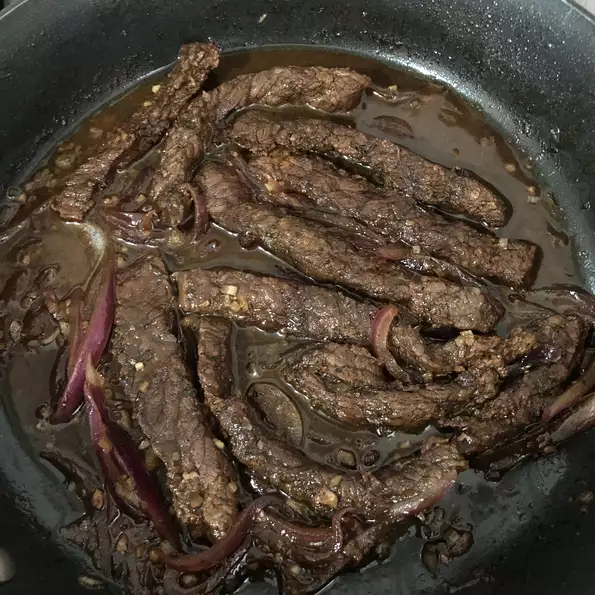

Home
Bistek

Description
This is a very easy recipe to make. A tender cut of beef is sliced thin and marinated with lemon juice and soya
sauce for at least an hour or longer.
Ingredients
Steps
- Whisk the lemon juice, soy sauce, sugar, salt, and pepper together in a small bowl. Place the sliced steak in a large bowl; pour the lemon juice mixture over the steak and toss to coat. Sprinkle with the cornstarch and lightly mix. Cover with plastic wrap and refrigerate at least 1 hour, up to overnight.
- Heat 1/4 cup vegetable oil in a large skillet. Remove the beef slices from the marinade, shaking to remove any excess liquid. Fry the beef slices in batches in the hot oil until they start to firm, and are reddish-pink and juicy in the center, 2 to 4 minutes per side. Remove the beef slices from the skillet and set aside on a serving platter.
- Heat the olive oil in a small skillet over medium heat. Cook and stir the onion and garlic in the hot oil until the onion is golden brown, 5 to 7 minutes; pour over the beef slices.